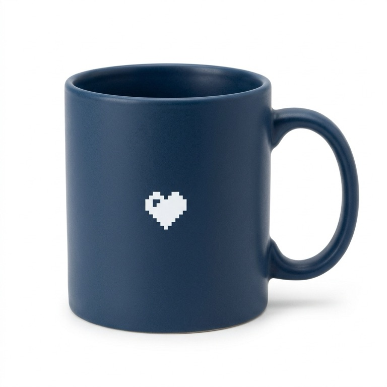
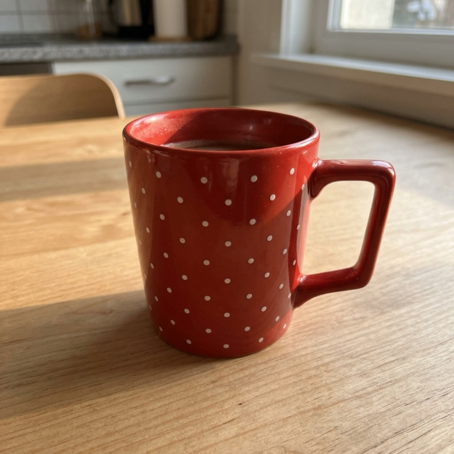

06 Imágenes en las preguntas
referencia
Lo compartido va en input. Lo que cambia en cada pregunta, en sus instructions: un array de partes de texto e imagen.
Devoluciones. El cliente manda una foto del producto que devuelve. ¿Es el mismo modelo que vendimos? La foto de catálogo (A) es la evidencia compartida; cada foto B va en su propia pregunta.
predicate × 3 · questions[i].instructions = [ texto, imagen B ]

——

——

——